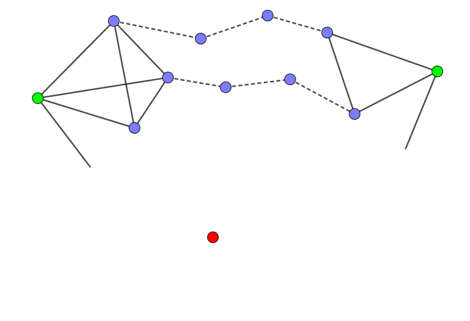
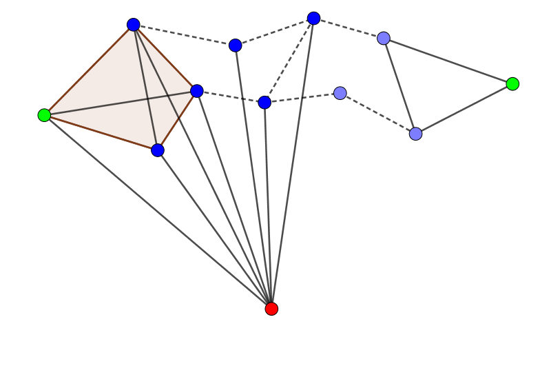

题目描述
K 国是一个热衷三角形的国度，连人的交往也只喜欢三角原则。她们认为三角关系：即 AB 相互认识，BC 相互认识，CA 相互认识，是简洁高效的。
为了巩固三角关系，K 国禁止四边关系，五边关系等等的存在。所谓 $n$ 边关系，是指 $n$ 个人 $A_1, A_2, \cdots, A_n$ 之间仅存在 $n$ 对认识关系：$(A_1, A_2), (A_2, A_3), \cdots, (A_n, A_1)$，而没有其它认识关系。
比如四边关系指 ABCD 四个人 AB、BC、CD、DA 相互认识，而 AC、BD 不认识。全民比赛时，为了防止作弊，规定任意一对相互认识的人不得在一队，国王想知道，最少可以分多少支队。
输入格式
第一行包含两个正整数 $n, m$ ($n \leq 10000, m \leq 10^6$)。表示有 $n$ 个人，$m$ 对认识关系。
接下来 $m$ 行，每行包含两个整数，表示一对相互认识的人。
输出格式
输出一行一个整数，表示最少可以分多少支队。
题解
在讲题解之前，先扯几个概念：
导出子图 (induced subgraph)：若 $G = (V, E)$，则 $G$ 的一导出子图 $G[V'] = (V', E')$ 满足对 $\forall u, v \in V', (u, v) \in E$，都有 $(u, v) \in E'$。
弦图 (chordal graph)：若 $G$ 的任何一个导出子图均不同构于圈图 $C_n$ ($n \geq 4$)，则 $G$ 为弦图。
色数 (coloring number)：用若干个颜色给图 $G$ 染色，使得相邻两个点的颜色不同的颜色数的最小可能值，记作 $\chi(G)$。
单纯点 (simplicial vertex)： 设 $N(v)$ 表示与点 $v$ 相邻的点组成的集合。点 $v$ 为单纯点，如果 $G \left[ \{v\} \cup N(v) \right]$ 为完全图。
引理：任何一个弦图必存在至少两个单纯点。
证明 (跳过证明)：仅考虑连通图，显然，任何一个连通图存在一个加点序列保证时刻连通，下用数学归纳法证明。
当 $|V| = 2$ 时显然成立。
假设 $|V| = n$ 时成立，$n$ 个点组成一个连通弦图，如下图，其中两个绿色的点是单纯点。

考虑增加红点，考虑红点的邻接情况。
- 红点与两个绿点均不连通，那么两个绿点依旧是单纯点，证毕。
红点与其中一个绿点 $u$ 连通。
记集合 $N$ 为与红点相邻的点组成的集合，即下图中蓝点和 $u$ 的集合；再记完全图 $I = G \left[\{u\} \cup N(u) \right]$，即下图中橙色部分。

若 $N \subset I$，则红点就是一个单纯点，否则，$N$ 与 $I$ 外的一个点相连，记作 $v$ (橙色点)。
由图的连通性，$u$ 到 $v$ 有路径相连，且 $u, v$ 不直接相连。

注意图中红色的圈，它需要满足弦图的条件，又由于 $n$ 个点的图是给定的，所以 $u$ 到 $v$ 路径上的所有点均属于 $N$。
同理，$u$ 到 $v$ 还有其它路径，如下图：

同理，这些点也应该属于 $N$。
那么也就是说，$I$ 中大多数点都属于 $N$，除了这样的点 $v$——$v$ 也是一个单纯点。
这样一来，如果 $I \subset N$，那么，$u$ 依然是一个单纯点，否则 $I \backslash N$ 中的点就是单纯点。
加上另外一个绿点，就有两个单纯点。
红点与两个绿点 $u_1, u_2$ 均连通，类似地，记对应的完全图为 $I_1, I_2$。

那么类似地，$I_1, I_2$ 中 几乎所有的点都属于 $N$，除了这样的点 $v$——$v$ 也是一个单纯点。
这样一来，如果 $I_1 \subset N$，那么 $u_1$ 是单纯点，否则，$I \backslash N$ 中的点就是单纯点。
$u_2$ 那边同理，还是有两个单纯点
由数学归纳法知，该结论成立。(感觉证明太复杂，可能有漏洞，希望大佬更正并简化一下证明过程)
接下来还有一个概念叫做完美消除序列 (perfect elimination ordering)：
一个点的序列 (其实就是 $n$ 个点的排列) $v_1, v_2, \cdots, v_n$ 满足 $v_i$ 为导出子图 $G \left[ \{v_k \mid i \leq k \leq n \} \right]$ 的单纯点。
定理：一个无向图是弦图当且仅当它有一个完美消除序列。
充分性 (弦图 ⇒ 序列)：根据引理，只要每次选一个单纯点即可，因为弦图的 (导出) 子图依旧是弦图。
必要性 (序列 ⇒ 弦图)：用反证法。假设原图不是弦图，则存在一个导出子图同构于圈图 $C_n$ ($n \geq 3$)，可以发现这 $n$ 个点中永远不可能成为单纯点，因此无法产生这样的序列。
接下来有个最大势算法 (maximum cardinality search)，用来计算它的团数。
记 $l_i$ 为每个点相邻的已标号的点的个数。每次选择 $l_i$ 最大的点 $i$，将它邻接的点的 $l_j$ 值加 $1$，然后删去这个点。
最后，$l_i$ 中的最大值 $+ 1$ 就是这个弦图的团数。
考虑色数，由于它存在完美消除序列，只需要从后往前依次染最小的颜色即可。
又由于在完美消除序列中，$\{v\} \cup N'(v)$ 为完全图，因此染色中的色数不超过团数。
又由团数 $\omega(G)$ 不超过色数 $\chi(G)$ 定理，则有团数等于色数。
那么，刚才求出的团数就是色数。时间复杂度 $O(n^2)$。
至于每次是找最大的，那可以用堆优化，时间复杂度降为 $O(n \log n)$。(听说用链表可以降到 $O(n + m)$？)
代码
#include <bits/stdc++.h>
#include <ext/pb_ds/priority_queue.hpp>
#define maxV 10034
#define maxE 2048808
using __gnu_pbds::priority_queue;
struct _{
int id, val;
_ (int id0 = 0, int value = 0): id(id0), val(value) {}
bool operator < (const _ &b) const {return val < b.val;}
};
typedef priority_queue <_> prio_queue;
int V, E;
int u, v, i, g, ans;
int to[maxE], first[maxV], next[maxE];
_ t;
bool used[maxV];
prio_queue pq;
prio_queue::point_iterator it[maxV];
inline void addedge(int u, int v, int id) {to[id] = v; next[id] = first[u]; first[u] = id;}
inline void up(int &x, const int y) {x < y ? x = y : 0;}
int main(){
scanf("%d%d", &V, &E);
for(i = 0; i < E; ){
scanf("%d%d", &u, &v);
addedge(u, v, i << 1 | 1);
addedge(v, u, ++i << 1);
}
for(i = 1; i <= V; ++i) {t = _(1, 0); it[i] = pq.push(t);}
for(; !pq.empty(); ){
t = pq.top(); pq.pop();
v = t.id;
used[v] = true;
for(i = first[v]; i; i = next[i])
if(!used[u = to[i]]){
up(ans, g = it[u]->val + 1);
pq.modify(it[u], _(u, g));
}
}
printf("%d\n", ++ans);
return 0;
}
坑
坑1：根据套路，区间最值这玩意儿显然是用堆维护 (如果只维护一个点邻接的最大值，那么算法是错误的)，建议使用 __gnu_pbds:priority_queue，支持 modify() 操作，可以较好支持将 $l_i$ 增加 $1$ 的操作，通过避免多余的堆中元素，将 $O(n \log m)$ 降到 $O(n \log n)$。